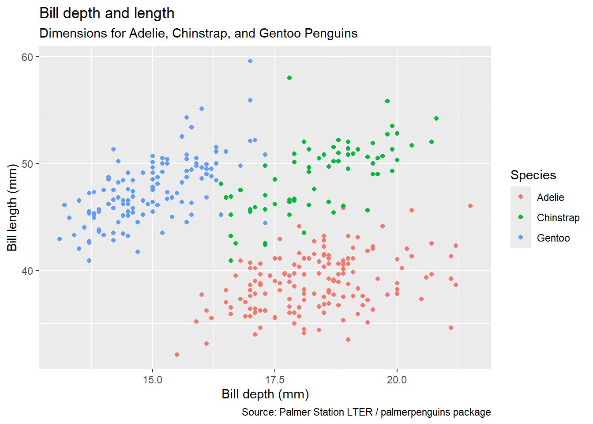

ggplot + Data visualization libraries
General information about ggplot
Taken from module 2 and independent research
library(palmerpenguins)## Warning: package 'palmerpenguins' was built under R version 4.3.3library(ggplot2)The ggplot function, in its most basic form, takes a dataset and the dimensions/axes of the plot. Then you add the actual data points with e.g. data_point() This can for example look like ggplot(data = dataset, mapping = aes(x = x_var, y = y_var)) + geom_point() Mapping is to tell it what to map out on the plot, using aes to define what to put on it. If you just use mapping and not geom_point(), you will just get the axes on the plot, but no content. You therefore have to add that by e.g. geom_point().
Here is an example of what happens if you only run the general ggplot function, without e.g. geom_point()
ggplot(data = penguins,
mapping = aes(x = bill_depth_mm, y = bill_length_mm,
color = species)) If you add geom_point(), you will get:
If you add geom_point(), you will get:
ggplot(data = penguins,
mapping = aes(x = bill_depth_mm, y = bill_length_mm,
color = species)) +
geom_point()## Warning: Removed 2 rows containing missing values or values
## outside the scale range (`geom_point()`).
Labels
Here is an example of different labels you can add to a graph and where it shows up:
ggplot(data = penguins,
mapping = aes(x = bill_depth_mm, y = bill_length_mm,
color = species)) +
geom_point() +
labs(title = "Bill depth and length",
subtitle = "Dimensions for Adelie, Chinstrap, and Gentoo Penguins",
x = "Bill depth (mm)", y = "Bill length (mm)",
color = "Species",
caption = "Source: Palmer Station LTER / palmerpenguins package")## Warning: Removed 2 rows containing missing values or values
## outside the scale range (`geom_point()`).
You can also add geom_text() or geom_label() (creates a box around the label) to get text on the plot itself. If you don’t want all the labels for the data points, filter out for example the top 10 and plot those If your labels overlap, the easiest way to undo that is to use geom_labels_repel() in the ggrepel package
Diff based on variable
We know that we can have variables distinguished by mapping them onto the x and y axes, as well as separate them by color. However, you can also separate them by shape, size, and alpha (transparency). All of these are done in aes(). You can also have one variable have two different characteristics, such as both different colors and shapes, to make the graph extra clear.
If you add these properties inside of e.g. the geom_point() instead of mapping and aes, you will just apply that to all data points, instead of have it differ based on a variable.
You can also facet your plot and get individual plot per combination of variable(s). If you have one, use facet_wrap(), if you have multiple, use facet_grid(). facet_grid(var_1 ~ var_2) or facet_wrap(~ var_1) If you want facet_wrap(), but with max two columns, you can specify that, e.g. facet_wrap(~ var_1, ncol = 2)
Random notes
If you want to remove the legend, add guides(color = FALSE) where you switch out color with whatever you used to separate the variables with. Guides is added as a separate function with the + sign to the general ggplot code.
If you have most of your data clustered around a smaller range of the plot. You can use filter and put a subsetted part of the data set into the plot, to see the nuances more clearly
Different types of plots
Histograms
ggplot(penguins, aes(x = flipper_length_mm)) +
geom_histogram()## `stat_bin()` using `bins = 30`. Pick better value
## with `binwidth`.## Warning: Removed 2 rows containing non-finite outside the
## scale range (`stat_bin()`).
You can change the binwidth (the amount included in one bar in the histogram) by specifying binwidth in the geom_histogram() function. See examples:
ggplot(penguins, aes(x = flipper_length_mm)) +
geom_histogram(binwidth = 20)## Warning: Removed 2 rows containing non-finite outside the
## scale range (`stat_bin()`).
ggplot(penguins, aes(x = flipper_length_mm)) +
geom_histogram(binwidth = 1)## Warning: Removed 2 rows containing non-finite outside the
## scale range (`stat_bin()`).
You can add colors to fill in the histogram based on another variable. In that case, you should also specify alpha (transparency) to see the value lines better.
ggplot(penguins, aes(x = flipper_length_mm, fill = species)) +
geom_histogram(alpha = 0.60)## `stat_bin()` using `bins = 30`. Pick better value
## with `binwidth`.## Warning: Removed 2 rows containing non-finite outside the
## scale range (`stat_bin()`).
If you add fill you get the bars filled in, if you add color, you get the outline of the bar colored.
Density plot
ggplot(penguins, aes(x = flipper_length_mm, color = species)) +
geom_density()## Warning: Removed 2 rows containing non-finite outside the
## scale range (`stat_density()`).
You can add color to get individual lines with color, fill to fill in the lines (like mountains), shape seemingly just adds several lines that are all black and look the same. Size gives you different sizes, but it looks really ugly, like something you drew in paint.
You can also adjust the density (smoothness) of the curve with adjust. See examples
ggplot(penguins, aes(x = flipper_length_mm, color = species)) +
geom_density(adjust = 0.5)## Warning: Removed 2 rows containing non-finite outside the
## scale range (`stat_density()`).
ggplot(penguins, aes(x = flipper_length_mm, color = species)) +
geom_density(adjust = 2)## Warning: Removed 2 rows containing non-finite outside the
## scale range (`stat_density()`).
I think adjust = 1 is the standard.
Box plot
ggplot(penguins, aes(x = flipper_length_mm)) +
geom_boxplot()## Warning: Removed 2 rows containing non-finite outside the
## scale range (`stat_boxplot()`).
You can also add variables to the y-axis:
ggplot(penguins, aes(x = flipper_length_mm, y = species)) +
geom_boxplot()## Warning: Removed 2 rows containing non-finite outside the
## scale range (`stat_boxplot()`).
Scatterplot
ggplot(penguins, aes(x = flipper_length_mm, y = body_mass_g)) +
geom_point()## Warning: Removed 2 rows containing missing values or values
## outside the scale range (`geom_point()`).
ggplot(penguins, aes(x = flipper_length_mm, y = body_mass_g)) +
geom_point() +
geom_smooth()## `geom_smooth()` using method = 'loess' and formula =
## 'y ~ x'## Warning: Removed 2 rows containing non-finite outside the
## scale range (`stat_smooth()`).## Warning: Removed 2 rows containing missing values or values
## outside the scale range (`geom_point()`).
Hex plot
ggplot(penguins, aes(x = flipper_length_mm, y = body_mass_g)) +
geom_hex()## Warning: Removed 2 rows containing non-finite outside the
## scale range (`stat_binhex()`).
Bar chart
ggplot(data = penguins, mapping = aes(x = species)) +
geom_bar()
You can flip the plot on its side with coord_flip(). You can also technically do this by making the variable of interest the y variable instead of x variable.
ggplot(data = penguins, mapping = aes(x = species)) +
geom_bar() +
coord_flip()
If you want to color in the bars by another variable, you can add fill = variable to color it in based on counts. You can also add in position = variable in geom_bar() to fill it based on its proportion (in addition to having fill in the aesthetics). See below:
Count:
ggplot(data = penguins, mapping = aes(x = species, fill = sex)) +
geom_bar()
Proportion:
ggplot(data = penguins, mapping = aes(x = species, fill = sex)) +
geom_bar(position = "fill")
Violin plots
ggplot(penguins, aes(x = species, y = flipper_length_mm)) +
geom_violin()## Warning: Removed 2 rows containing non-finite outside the
## scale range (`stat_ydensity()`).
Ridge plots
Requires ggridges library. Looks like several valleys laying on top of each other.
# library(ggridges)
# ggplot(loans, aes(x = loan_amount, y = grade, fill = grade, color = grade)) +
# geom_density_ridges(alpha = 0.5)Customizing the layout
You can remove the tick marks and labels with theme( axis.ticks.y = element_blank(), axis.text.y = element_blank())
See example with box plot:
ggplot(penguins, aes(x = flipper_length_mm)) +
geom_boxplot() +
theme(
axis.ticks.y = element_blank(),
axis.text.y = element_blank())## Warning: Removed 2 rows containing non-finite outside the
## scale range (`stat_boxplot()`).
Note that the plot now has no labels or values on the y-axis.
You can also change themes to change the layout of the plot.
ggplot(penguins, aes(x = flipper_length_mm)) +
geom_boxplot() +
theme_bw()## Warning: Removed 2 rows containing non-finite outside the
## scale range (`stat_boxplot()`).
ggplot(penguins, aes(x = flipper_length_mm)) +
geom_boxplot() +
theme_minimal()## Warning: Removed 2 rows containing non-finite outside the
## scale range (`stat_boxplot()`).
Weird things that I can’t explain, but are probably useful to know for debugging
If you have a color layer to a plot and add geom_smooth() it gives you a smooth line for each category in geom too. You can fix this by moving the color argument of eas for ggplot into the specific geom_point() function, such as geom_point(color = species). However, for some reason, you can also fix it by adding color = “black” as an argument to geom_smooth(). See the following three examples
ggplot(penguins, aes(x = flipper_length_mm, y = body_mass_g)) +
geom_point(aes(color = species)) +
geom_smooth()## `geom_smooth()` using method = 'loess' and formula =
## 'y ~ x'## Warning: Removed 2 rows containing non-finite outside the
## scale range (`stat_smooth()`).## Warning: Removed 2 rows containing missing values or values
## outside the scale range (`geom_point()`).
ggplot(penguins, aes(x = flipper_length_mm, y = body_mass_g, color = species)) +
geom_point() +
geom_smooth()## `geom_smooth()` using method = 'loess' and formula =
## 'y ~ x'## Warning: Removed 2 rows containing non-finite outside the
## scale range (`stat_smooth()`).## Warning: Removed 2 rows containing missing values or values
## outside the scale range (`geom_point()`).
ggplot(penguins, aes(x = flipper_length_mm, y = body_mass_g, color = species)) +
geom_point() +
geom_smooth(color = "blue")## `geom_smooth()` using method = 'loess' and formula =
## 'y ~ x'## Warning: Removed 2 rows containing non-finite outside the
## scale range (`stat_smooth()`).## Warning: Removed 2 rows containing missing values or values
## outside the scale range (`geom_point()`).
Geoms
geom_rect() draws a rectangle around a point of interest geom_segment() draws an arrow to the point of interest
Libraries
ggpattern creates cool patterns, but crashes R when it gets too complicated. For example, this code works without ggpattern, but not with ggpattern. Other graphs that didn’t have facetting worked with ggpattern. I checked this on the lab computer too and it still crashes, so it isn’t due to my computer not being strong enough.
avg_diff_score_df %>%
select(diff_sc_ext_fm_mean, diff_sc_ext_fm_sd, diff_sc_ext_fc_mean, diff_sc_ext_fc_sd, diff_sc_ext_mc_mean, diff_sc_ext_mc_sd, Age_cat) %>%
pivot_longer(cols = -Age_cat, names_to = c("raters", ".value"), names_pattern = "[[:alpha:]]+_sc_ext_([[:alpha:]]+)_([[:alpha:]]+)") %>%
mutate(
raters = case_when(
raters == "fm" ~ "Father - Mother",
raters == "fc" ~ "Father - Child",
raters == "mc" ~ "Mother - Child"
)
) %>%
ggplot(aes(x = Age_cat, y = mean)) +
geom_bar(stat = "identity", color = "black", fill = "white", width = 0.4) +
geom_errorbar(aes(ymin = mean - sd, ymax = mean + sd), width = 0.20) +
facet_wrap(vars(raters), nrow = 3) +
#ylim(-10, 5) +
theme_classic() +
theme(axis.text.x = element_text(colour = "black"),
axis.text.y = element_text(colour = "black"),
axis.line.x = element_blank(),
axis.ticks.x = element_blank(),
panel.grid.major.y = element_line(),
panel.grid.minor.y = element_line(),
strip.background = element_blank()) +
#coord_cartesian(expand = FALSE, xlim = c(0.5, 3.5), ylim = c(-10, 5)) +
geom_hline(aes(yintercept = 0)) +
labs(
x = "Age Category",
y = "Mean Difference Scores"
)Internalizing scores:
avg_diff_score_df %>%
select(diff_sc_int_fm_mean, diff_sc_int_fm_sd, diff_sc_int_fc_mean, diff_sc_int_fc_sd, diff_sc_int_mc_mean, diff_sc_int_mc_sd, Age_cat) %>%
pivot_longer(cols = -Age_cat, names_to = c("raters", ".value"), names_pattern = "[[:alpha:]]+_sc_int_([[:alpha:]]+)_([[:alpha:]]+)") %>%
mutate(
raters = case_when(
raters == "fm" ~ "Father - Mother",
raters == "fc" ~ "Father - Child",
raters == "mc" ~ "Mother - Child"
)
) %>%
ggplot(aes(x = Age_cat, y = mean)) +
geom_bar(stat = "identity", width = 0.4) +
geom_col_pattern(aes(pattern = "mean"), pattern = "stripe", pattern_colour = "lightgrey", color = "black", fill = "white", width = 0.4) +
geom_errorbar(aes(ymin = mean - sd, ymax = mean + sd), width = 0.20) +
facet_wrap(vars(raters), nrow = 3) +
#ylim(-10, 5) +
theme_classic() +
theme(axis.text.x = element_text(colour = "black"),
axis.text.y = element_text(colour = "black"),
axis.line.x = element_blank(),
axis.ticks.x = element_blank(),
panel.grid.major.y = element_line(),
panel.grid.minor.y = element_line(),
strip.background = element_blank()) +
#coord_cartesian(expand = FALSE, xlim = c(0.5, 3.5), ylim = c(-10, 5)) +
geom_hline(aes(yintercept = 0)) +
labs(
x = "Age Category",
y = "Mean Difference Scores"
)Random stuff
Self-made discrete scale: scale_fill_manual(values = c(“#F2FFDA”, “#D3F3B4”, “#BFE9B4”, “#7FCD97”, “#7FCDBB”, “#41C6BD”, “#41B6C4”, “#1D9FC0”, “#1D91C0”, “#2273A9”, “#225EA8”, “#415EAC”, “#253494”, “#18337D”, “#081D58”, “#051644”))
Things go on top of each other. If you make width of bar .5 and width of pattern in ggplot .4, you see things going out on the sides.
How to make graphs APA style. See thesis project
change fig.height and width in r chunk code parameter to change the plot size. Looks like the default is 7.5 in height?
use str_wrap with width = 80 to make the title of a plot not go beyond the plot and be cut off. Creates a new line instead.
To do list
- Add info about grammar of graphics
- Explore making ggplot APA style
- Explore different things one can do with ggplot
- Explore other libraries for data visualization too?